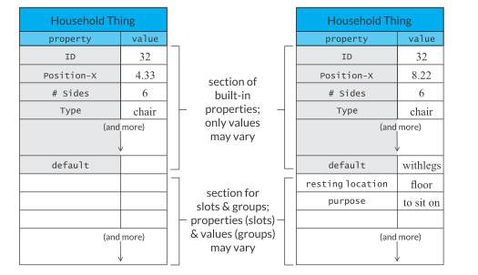

分组
命令词或关键字
术语 group 可作为命令词出现。考虑：
该术语也可能是命令中可用的关键字之一。例如见：
无论在命令中还是作为关键字，功能都相同：使用时 group 为当前命令的所有目标对象打上标签（组名），此后可在其他命令中用 范围（range） 引用。
熟悉本程序早期版本的用户会认出该功能即旧的 GROUP 命令。不过在 新语法中的通用命令（common commands in the new syntax） 中，c 分组（group） 命令是用于列出或重命名组与槽位的工具。创建与管理组成员关系由按需提供组逻辑（作为命令词或关键字）的对象命令处理。
组逻辑
组是施加于对象作为分类手段的标签。设想你有三件家用物品：椅子、地毯和画。可以按它们的静止位置（resting location）分类（分别为 底面（floor）、底面（floor） 与 墙体（wall）），或按它们的用途（purpose）分类（分别为 坐落于（to sit on）、站立于（to stand on） 与 查看（to look at））。每个对象可用若干属性描述，通过这种分类便可对该集合提出问题。例如我们可能想查询这组家用物品中放置位置为地板的物品（即椅子与地毯）。
组逻辑是 FLAC3D 中用于对模型对象分类的工具。可把组槽位视为对应所论属性的有意义的名称（即上例中的 静止位置（resting_location） 或 用途（purpose））。另一方面，组名是该属性对对象所取的值。例如椅子在槽位 静止位置（resting_location） 中属于组 底面（floor），表示其放置位置在地板上。椅子也在槽位 用途（purpose） 中属于组 坐落于（to_sit_on），表示椅子的用途是坐。事实上，模型中可指定任意数目的组名，并可使用最多 128 个不同槽位名。
转到岩土工程情境，可能希望实施分阶段开挖序列，每步依次移除模型的一部分。用组逻辑可设想创建名为 阶段 1（stage1）、阶段 2（stage2） 等的组槽位，分别对应开挖的各个阶段。在第 阶段 1（stage1） 阶段开挖范围内可有属于组 第一（first）、第二（second） 等的对象。这使用户可以移除 stage1 中第一、第二等部分，移除 stage2 中第一、第二等部分，依此类推。
对象是组的“成员”，并将一直保持如此，直到后续某条命令把它们从该组移除、移除该组本身，或在指定槽位中把它们赋给另一个组。这与范围形成对照：范围在模型的不同时刻使用可能返回不同对象（例如位置落在特定范围内的对象）。组可以被移除，但这不会导致其成员对象被移除或从模型中删除。命令可在操作进行过程中依据各种准则赋予组。
如上所述，组始终由两部分组成：组槽位与组名。为方便起见，可把对象赋予某个组名而不指定槽位。此时使用默认槽位赋值。对任何“未指定槽位”的组，默认槽位赋值为名为 默认（Default） 的槽位。
组规则
使用组时需牢记的要点如下：
- 一个对象在给定槽位中只能被赋予一个组名
- 组名总是有槽位赋值
- 在对象某槽位中赋予的组名将覆盖此前赋给该槽位的任何组名
关于第二点，需注意可把组名赋给对象而不指定槽位；但此时组被自动赋给内建槽位 ‘default’。
第三点突显了槽位的必要性：它们提供一种把同一对象放入不同组而不冲突的方式，从而实现相当复杂的命名对象交集。
为便于说明，考虑以下使用 标量（scalar） 对象的明确示例。
data scalar group "one" slot "main" range id 1,5
data scalar group "two" slot "main" range id 1,10
data scalar group "three" slot "main" range id 1,5
data scalar group "two" slot "mane" range id 6,10
处理后可得到：
- 在槽位 “main” 中没有标量被赋予组 “one”（第一行的赋值被第二行的赋值覆盖）
- id 为 6-10 的标量在槽位 “main” 中被赋予组 “two”
- id 为 1-5 的标量在槽位 “main” 中被赋予组 “three”
- id 为 6-10 的标量在槽位 “mane” 中被赋予组 “two”
id 为 6-10 的标量分属两个同名（“two”）的组。不过这两个组位于不同槽位（“main” 与 “mane”），因此既不存在组成员关系的冲突，也不存在组名的冲突。
再给出一个示例，演示如何把多次组赋值与交集配合使用以移除某个对象。
data scalar create (1,0,0)
data scalar create (5,0,0)
data scalar create (10,0,0)
data scalar group "left-most" slot "position1" range position-x 1,5
data scalar group "right-most" slot "position2" range position-x 5,10
data scalar delete range group "left-most" and "right-most"
前三行在不同位置创建三个标量。接下来两行给最左与最右两组标量赋予组名。最后，用 分组（group） 范围元素删除中间那个标量，因为它同时属于 “left-most” 与 “right-most” 槽位。
替代语法
组名与组槽位赋值的典型表述形式为 group 分组名（"groupname"） slot 槽位名（"slotname"），如此处所示。
data scalar group "groupname" slot "slotname" range position-x 100 2000
不过还有一种有效的替代写法 槽位名 = 分组名（slotname = groupname）。采用该写法时上述命令变为
data scalar group "slotname = groupname" range position-x 100 2000
其中 槽位名（slotname） 为槽位赋值，分组名（groupname） 为组名。引号是必需的，但等号处的空格（若有）被忽略。
数据层次结构
某些数据结构通过层次结构相互关联。例如在几何逻辑中，点与边相连，边又与多边形相连。在 FLAC3D 中，网格点与面相连，面又与网格单元相连。
默认情况下，在大多数数据类型参与层次结构的情形中，组逻辑在检查组匹配时会自动沿层次向上查找。因此若逻辑要检查某几何节点是否属于组 Fred（人名）（Fred），只要该节点直接属于该组或与该节点相连的某条边或某个多边形属于该组，就会找到匹配。
组逻辑绝不会沿层次向下查找，因此除非多边形本身直接属于组 Fred（人名）（Fred），否则绝不会把该多边形视为该组成员——即便该多边形的每条边与每个节点都属于该组。
这会影响 group 范围元素与 .isgroup 系列 FISH 内建函数。可在范围元素中使用 by 关键字来限制该行为。
组与命名范围的比较
组与命名范围（见 创建模型范围命令（model range create））有相似之处，但存在关键差异。范围始终是一组用于选取对象集合的准则，因此：
- 它选出的对象在不同时刻可能不同，取决于模型行为与范围的定义，并且
- 命名范围可应用于不同类型的对象。
组是一组具有共同槽位-组赋值的对象。因此：
- 组总是表示同一特定类型的特定对象集合，只有当组成员被删除或它们在同一槽位中被覆盖为新的组时才会改变（见上文）。
看待该问题的另一种方式
程序中的组与槽位提供两项主要能力：把同类对象组织到用户定义集合中的能力，以及建立多个集合（最多 128 个）的能力。
对组与槽位产生某些混淆的一个可能原因是：“组”与“槽位”这两个词暗示涉及某种“东西”——一个类似“桶”的容器（组）装着对象（网格单元、球、块体面等），而它又被另一个容器对象（槽位）装着。然而槽位/组只是写入对象数据结构的标签。程序内部并没有组或槽位的“对象”表示。
任何对象都有若干内建的成对性质-值数据构成该对象：ID = 32；Position-X = 4.33；# sides = 6；等等。这些内建于对象的定义之中，即其值可以改变（也确实会改变），但与之关联的性质不能改变。
槽位与组大体同理，但有一个关键区别：组与槽位属于对象的“用户定义”区域，用户可在此定义（并改变）两个部分：性质（槽位）部分与值（组）部分。在该空间内有一个内建槽位名为 “default”，不受用户操作影响（既不能删除也不能重命名）。任何在创建时未指定相应槽位赋值的组都会进入该槽位。

图 1：左侧表示上述“家用物品”对象且未作组赋值；右侧表示已作上述组-槽位赋值。
该图给出上述第一、第二条规则的直观依据：在同一槽位中给对象赋多个组名会产生歧义，而没有槽位名的组是不可能的。
| 这些内容对您有帮助吗？… | FLAC3D © 2019, Itasca | 原文更新于 2020 年 10 月 8 日 |